Page 1 / 原始页码 403
第6篇 进化
了解正在进行的进化
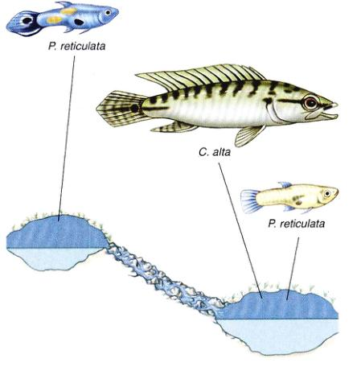
为了研究进化，生物学家传统上通常是对过去发生的事情进行调查，有时甚至要追溯到几百万年前。要了解恐龙，古生物学家就要观察恐龙化石；要了解人类的进化过程，人类学家们就不仅需要观察古人类化石，还需要分析突变的“家谱”，它已经积累了几百万年以来人类DNA中的基因变异。对这些应用传统方法的生物学家们而言，进化生物学和天文、历史等科目一样，在验证一个过去发生的事物时，更依赖于观察和演绎，而不是实验和归纳。
然而，进化生物学并不完全是一门观察学科。近年来对自然种群研究的很多事例都表明，物种的进化在某些情况下极其迅速。在时候，设计可以直接证明进化的实验是可能的。尽管在实验室里用作研究的果蝇和其他生物在50多年前就已应用得十分普遍，但对于自然界进化的实验研究，还是这几年才开始的。
想要实施检验进化的实验，首先的就是确定一个自然条件下可供选择作用的种群。调查者预测一种选择产生的影响，通过操纵选择压力使种群变化，然后观察真实的实验结果。
产于委内瑞拉和其附近特立尼达岛 (Trinidad) 小河中的古比鱼——Poecilia reticulata 提供了一个良好的实验机会。在特立尼达岛，这种鱼在很多山洞里都有分布，其中有些山洞中有瀑布。令人惊奇的是，古比鱼能够逆流而上，利用瀑布拓展自己的生活区域。在雨季，山涧的水位上涨，瀑布相对长度缩短。在这种情况下，古比鱼有可能跃过瀑布这一障碍到达瀑布上游的池塘。但并不是所有的鱼都会利用瀑布，因此，不会越过瀑布的那些鱼些只能在这些山洞第一级瀑布以下的水域中生存。棘鳍丽鱼 (Crenicichla alta) 是这类分布范围受瀑布所限制的鱼之一，它是一种食肉鱼，以古比鱼和其他鱼类为食。
由于能跨越瀑布的隔断分布，古比鱼在瀑布上下游两种完全不同的环境里都有分布。在瀑布下游的池塘中，捕食者是基本的威胁，古比鱼生存率相对较低。相反，在瀑布上游的池塘中，只有很少的捕食者捕食古比鱼。结果，瀑布上下游的古比鱼种群因此产生许多差异。在有高捕食行为发生的池塘里，古比鱼的体色呈一种单调的土褐色，这种颜色成为它们的保护色。除此之外，它们有在较小年龄生殖的倾向。
这种差异暗示着自然选择的作用，或许是由于将能量更多用于生殖而不是生长上，在高捕食行为发生池塘中的古比鱼成体体形要小一些。与此对照的是，在瀑布之上的那些古比鱼的雄鱼展示出华丽的色彩和斑点来吸引雌鱼（见上图），成体成熟较晚且体型较大。
进化对这种变化做出的解释不止一种。举个例子来说，也许只有体形大的鱼才能够跳过瀑布进入上面的池塘，如果这一假设成立，就会发生建立者效应，即新种群完全由具有大体型基因的个体组建而成。
实 验
验证这些可能性哪一个正确的唯一方法就是进行条件可控制的实验，John Endler (目前在圣巴巴拉的加利福尼亚大学) 在 20 世纪 70 年代末通过一套经典的实验和野外实验，第一个弄清了自然选择是如何作用于这种古比鱼的。
Page 2 / 原始页码 404
进化改变古比鱼身上斑点数目 生活在低捕食环境中的古比鱼身上有很多斑点，反之，在危险的环境选择下，比如在捕食者很多的池塘中，很少有鲜艳的鱼 (左上图)。在野外实验中，如果将古比鱼分别放养在瀑布上游和下游的池塘中，也获得了同样的结果 (右上图)。
1. 实验室实验 Endler 在实验温室里建造了 10 个水池，池里的沙砾模拟在特立尼达岛上山洞的自然背景色，每个水池中饲养着在不同地方采集来的古比鱼。然后将 10 个水池中的小鱼混合在一起，保证使所有的种群具有类似的基因组成。
然后他将棘鳍丽鱼 C.alta 放入 4 个池子中，把另外一种产于淡水中的鳉科小鱼 (killifish) (几乎不以古比鱼为食) 放入另外的 4 个水池，剩下两个池子中保持没有捕食者。然后让种群在各自有或没有捕食者的环境里慢慢地进化。
2. 野外实验 在平行的野外实验中，Endler 捕捉了一些在有丽鱼科食肉鱼池塘中的古比鱼，其体色是土褐色的，将它们释放到瀑布上游没有捕食者也没有古比鱼的池塘里。
在 Endler 将部分古比鱼从高捕食行为环境迁移到低捕食行为环境 11 年之后，加州大学的 David Reznick 追踪调查了该种群的演化情况。
结 果
1. 实验室实验 在加入食肉鱼 14 个月 (相当于繁殖了 10 代) 之后，Endler 比较了各个种群 (见上图曲线)，发现现在有鳉科小鱼的水池中和没有捕食者的对照组水池中的古比鱼有较为明亮的色彩。与之相对的是，在有食肉鱼的池塘中的古比鱼都是土褐色的，捕食活动使色彩明亮的古比鱼数量急剧减少。
2. 野外实验 在把土褐色的古比鱼转移到没有捕食者的池塘的两年之后，即在并不严峻的选择压力下繁殖了 15 代之后，原先古比鱼土褐色的外表转变为生活在没有捕食者环境中典型种群复杂丰富的色彩。
Endler 的野外进化行为实验结果为我们描绘了一幅令人鼓舞的蓝图。他们立即就这一成果提出了很多问题：色彩特征是不是影响捕食行为的惟一原因？古比鱼后代的数量是多少？它们的繁殖率是多大？我们能否估算出实际选择作用的速度？
加州大学的 David Reznick、Helen Rodd 及明尼苏达大学的 Riverside、Frank 和 Ruth Shaw 对这些问题进行了广泛的后续性分析。他们在以后 11 年研究了古比鱼，考察了这种鱼的很多特征，这些特征不仅限于身体外貌的变化，而且包括其在生殖方面的消耗。
Reznick 的小组发现被转移的古比鱼后裔不仅颜色更加鲜亮，而且它们比生活在有捕食者池塘里的同类成熟得晚，而且有较大的体型。它们每次产生的后代数量很少，但是体型的个头很大，用于生殖的资源比例较小。总的来说，它们的生命历程进化到同生活在低捕食行为或没有捕食行为发生池塘里的古比鱼类似的样式。
进化的速度是以达尔文，即在单位时间内变化的本身值作为单位来衡量的。Reznick 的小组估计古比鱼的变化速度达到了 45 000 达尔文。相比而言，化石记录中测量到的变化速率只有 1/10 到 1 达尔文。显然，有时候进化可以十分迅速地进行。
Page 3 / 原始页码 405
第 20 章 种群中的基因
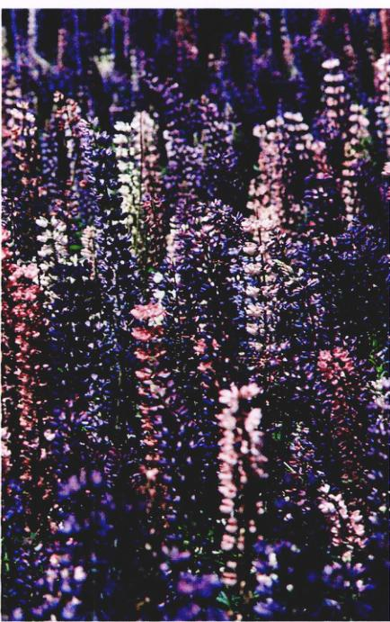
图 20.1 遗传性变异 种群内遗传物质的变化以一系列方式表现出来——包括颜色。
在这个世界上，没人和你完全一样，除非是与你同卵双生的兄弟。对于每一个个体来说，其与众不同的特点对他生存几率、繁殖机会甚至其后代的成功都有重要意义。进化由这几方面的结果而推动，影响这些特征的遗传突变，为自然选择提供原材料，自然种群中因而包含大量这样的变异。无论是植物（图 20.1）、昆虫还是脊椎动物，几乎每一个基因都能在一定程度上变异。这一章将研究自然种群的基因变异及使等位基因频率发生变化的进化力量。这些看似简单的问题是进化生物学的核心。
Page 4 / 原始页码 406
20.1 自然种群中的基因变异
20.1.1 基因变异是进化的原材料
1) 进化是“有修改的传代”
“进化”这个词被广泛地运用在自然科学和社会科学中，用于表示一个实体——可以是一个社会、一个系统、一种气体、一颗行星——随时间流逝而发生变化。尽管从生物学上讲，现代的进化概念可以追溯到达尔文的《物种起源》，但这本书最早的 5 个版本却均未使用“进化 (evolution)”一词，相反达尔文使用了一个短语“有修改的传代 (descent with modification)”。尽管在以后很多复杂的定义被陆续提了出来，但似乎还是达尔文使用的短语抓住了进化的本质：所有的物种起源于其他更早已存在的物种。随着时间的流逝，差异积累，后代物种已经和其祖先物种完全不相同了。
2) 自然选择是生物进化的一个重要机制
达尔文并不是第一个提出进化理论的人。相反，在他之前有一系列更早的哲学家和博物学家们推断我们周围许多生物产生于一个进化过程。与他的前辈们不同的是，达尔文提出了自然选择 (natural selection) 这一进化的机制。当时种群的某些个体具有某种遗传性状，它们的后代比不具这一性状的后代更易生存时，自然选择就会导致进化改变。结果，这个种群中逐渐产生了越来越多的具有有利于生存性状的个体。这样下去，这个种群就逐渐进化并变得更适应周围环境。
自然选择并不是提出的惟一进化机制，杰出的生物学家拉马克 (Jean-Baptiste Lamarck) 提出了另一个理论，认为进化是通过获得性遗传 (inheritance of acquired characteristics) 实现的。根据拉马克的理论，生物个体一生中获得的身体和行为上的改变将遗传给其后代。因此，拉马克提出，长颈鹿长脖子的祖先为了取食树叶而有伸长脖子的倾向，这种伸长的脖子也传给了它的后代，导致了长颈鹿特有的长脖子（图 20.2a）。与此对照的是，达尔文的理论认为，这种个体的变化不是由其经历造成的，而是个体间原有的遗传差异造成的（图 20.2b）。
尽管自然选择的作用现在已经得到广泛承认，但它也不是改变种群遗传构成的惟一作用因素。由于从一个等位基因到另一个等位基因的多次重复突变，或是迁移给种群带来新的基因，种群的基因频率也会发生改变。此外，当种群很小的时候，随机发生的小概率事件也会改变种群的基因频率。进化生物学家对这些过程作用的相对强度还有争论。尽管没人否认自然选择对于产生适应环境的变化是一种强大的力量，别的过程的重要性和影响也不能忽视。
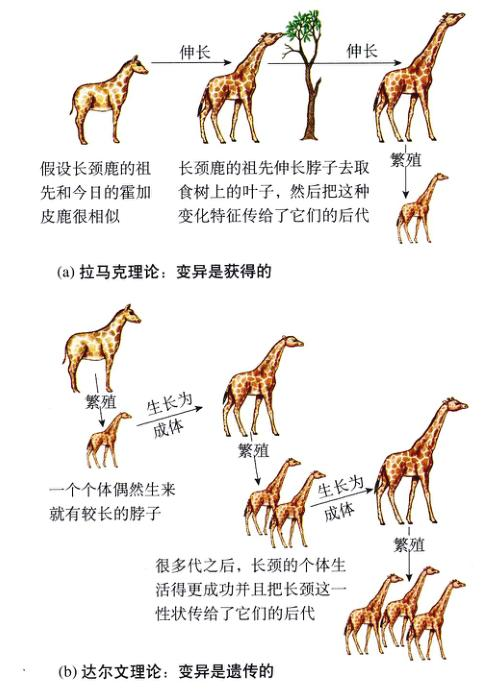
图 20.2 长颈鹿的长颈是怎样进化出来的 (a) 拉马克理论：变异是获得的；(b) 达尔文理论：变异是遗传的。
20.1.2 自然中的基因变异
1) 测量遗传变异水平
任何导致物种遗传组成发生变化的过程都可能导致物种内部的进化。从群体遗传学角度考虑这一理论，在观察研究时最好是从种群内已经存在的遗传变异开始，这是选择过程所利用的原材料。
我们在第 13 章已经了解到，一个自然种群中可能包含了许多不同的基因。这种情况不仅在人类这一物种中是这样，在所有的生物物种群中都是这样。究竟会发生多少种变异呢？科学家们观察了很多不同的基因，在努力寻找着一个满意的答案。
Page 5 / 原始页码 407
(1) 血型：化学分析显示，除了 ABO 血型之外，人类有 30 多种不同的血型，其中至少三分之一由人群中不同的等位基因组合造成。此外，还有 45 种以上不同基因编码的蛋白质存在于人血细胞和血浆中，未作为血型分型的依据。因此，在这样一个独立的系统内，就有超过 75 种不同的基因。
(2) 酶：等位基因造成特定酶的不同形式可通过测定不同蛋白质在电场中迁移速度的快慢（这一过程被称为电泳 electrophoresis）来区分。大量的变异存在于酶所在的基因位点。人类典型酶基因位点中大约有 5% 是杂合体：如果你随机挑出一个人，然后随机地选择一个编码酶的基因，那么有二十分之一 (5%) 的机会这个人在这个基因上是杂合的。
综观人类的基因组，可以这样说，每个人都是与众不同的，这一结论同样适用于除无性生殖生物以外的其他任何生物。在自然界中，基因具有多样性是颠扑不破的真理。
2) 酶的多态性
在一个给定种群的许多基因位点上，有不止一种等位基因，其出现频率显然高于由基因突变而造成的程度。研究者将基因座的多样性超出了突变所能解释的程度称作具有多态性 (polymorphic)（图 20.3）。在自然种群中，这种变异的程度在几十年前还不可观测的，直到现代技术（如凝胶电泳）的出现使我们有可能直接检测酶和其他蛋白质。现在我们知道大多数昆虫和植物种群在超过一半的编码酶基因座位上具有多态性（即有超过一个的等位基因以大于 5% 的频率出现），尽管在脊椎动物中的多态性少一些。果蝇 (Drosophila) 和其他无脊椎动物的杂合性 (heterozygosity)（即任意选择的一个个体的任意一个基因是杂合的概率）大约是 15%，而脊椎动物是 5% ~ 8%，而异型杂交的植物大约是 8%。这些高水平的遗传变异性为进化提供了丰富的原材料。
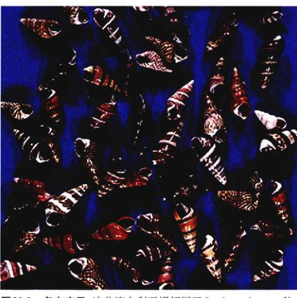
图 20.3 多态变异 这些澳大利亚螺都属于 Bankivia fasciata 种，它们的图案和色彩上显出相当多的差异。个体的这种差异是可遗传的。
3) DNA 序列的多态性
随着基因技术的出现，更直接地通过基因测序检查基因多态性成为可能。在 1989 年进行的开拓性研究中，Martin Kreitman 测定了 11 个果蝇 (Drosophila melanogaster) 个体的 ADH 基因序列。他找到了 43 个变异的基因位点，只有 1 个曾用蛋白质电泳检测出来。在此后的 10 年中，大量对 DNA 水平上变异的研究证实了这样一个发现：在基因的编码区和非转录的内含子中都存在大量变异——远多于我们通过电泳检测酶所发现的变异数量。
20.2 为什么种群中的等位基因的频率会不断地变化
群体遗传学 (population genetics) 是研究种群中基因特性的学科。自然种群中的遗传变异对于达尔文和他同时代的人来说是一个谜，减数分裂在杂种后代中产生基因分离的机制当时还没没发现，科学家于是想当然认为，自然选择这一机制总是选择最佳的形式，有消除变异的倾向。而混合遗传 (blending inheritance) 理论——认为子代的表型是双亲表型的中间类型——受到广泛的认同。如果混合遗传理论是正确的，那么新的遗传变异影响会在随后的几代中很快被稀释直至消失。
20.2.1 哈迪 - 温伯格定律
随着孟德尔研究的重新发现，1908年，两位科学家——英国数学家 G.H. Hardy 和德国物理学家 G. Weinberg 各自独立地解决了为什么遗传变异会保留下来这一难题。他们指出，只要符合以下几个假设，一个种群中原有的基因型比例将会在代与代之间保持不变：
- (1) 种群有较大的规模；
- (2) 交配是随机的；
- (3) 没有突变发生；
Page 6 / 原始页码 408
- (4) 没有新的基因引入（不发生迁移）；
- (5) 没有发生自然选择。
显性基因实际上不会取代隐性基因。由于其比例没有发生变化，这些基因型被称为满足哈迪 - 温伯格平衡 (Hardy-Weinberg equilibrium)。
用代数术语，哈迪 - 温伯格定律 (The Hardy-Weinberg Principle) 可写为一个方程式。假设有 100 只猫的群体，有 84 只黑猫和 16 只白猫。在统计学中，频率 (frequency) 是指落入某一分类的个体数占所考虑个体总数的比例。在这里，黑猫和白猫的频率分别为 0.84 (84%) 和 0.16 (16%)。通过这一表型的频率，我们能否推断出基因型的频率呢？如果假定白猫是某一等位基因的隐性纯合子，我们将这种隐性等位基因命名为 $b$，那么黑猫既有可能是显性基因纯合子 $BB$，也有可能是杂合子 $Bb$，我们可以从白猫、黑猫的个体比例中计算出种群含有这两种等位基因的等位基因频率 (allele frequency)。一般用 $p$ 和 $q$ 来表示这两种等位基因的频率，因为这一实验中只有这两种基因，所以 $p$ 加 $q$ 等于 1。
哈迪 - 温伯格方程可以表示为一个已知的二项展开式：
$(p+q)^2 = p^2 + 2pq + q^2$
(等位基因 $B$ 和 $b$ 的纯合子个体) + (含等位基因 $B$ 和 $b$ 的杂合子个体) + (等位基因 $b$ 的纯合子个体)
如果 $q^2 = 0.16$ (白猫出现的频率)，那么 $q = 0.4$。因此 $p$ 即等位基因 $B$ 出现的频率就是 $0.6$ ($1.0 - 0.4 = 0.6$)。现在可以很容易的计算出基因型频率 (genotype frequency)：$p^2 = (0.6)^2 \times 100$ (整个种群的个体数)，即有 36 个显性纯合子 $BB$ 的个体。杂合子基因为 $Bb$ 型，其数目应该等于 $2pq$，即 $(2 \times 0.6 \times 0.4) \times 100$，即种群中有 48 个杂合基因个体。
1) 哈迪 - 温伯格方程的应用
哈迪 - 温伯格方程其实是第 13 章中讲过的 Punnett 方格应用范围的扩展，只是我们用 $p$ 和 $q$ 分别代表了两个等位基因的频率。通过图 20.4 可以找出在有性生殖过程中各种组合的情况，以及它们如何影响 $B$ 和 $b$ 这两种基因在下一代中的频率。在这张图表中，我们假设这些猫的精子和卵细胞是随机结合的，因此 $B$ 和 $b$ 两种基因所可能的组合都会出现。由于这一原因，等位基因随机混合，在下一代中表现出和原来相同的比例。在每一代中每个单独的精子或者卵子带有 $B$ 基因的可能性是 0.6 ($p=0.6$)，带有 $b$ 基因的可能性是 0.4 ($q=0.4$)。
因此在下一代中，两个 $B$ 基因组合的几率是 $p^2$，即 0.36 ($0.6 \times 0.6$)。于是种群中继续有大约 36% 的个体拥有 $BB$ 基因型。具有 $bb$ 基因型的个体出现频率是 $q^2$ ($0.4 \times 0.4$)，其在种群中的比例继续保持在 16% 的水平上。而持有 $Bb$ 基因型的出现频率是 $2pq$ ($2 \times 0.6 \times 0.4$)，在种群中的比例大概是 48%。表面上，如果这一种群持续保持在只有 100 只猫的水平，我们将会在其中看到大约 84 只黑猫 (为 $BB$ 基因型或 $Bb$ 基因型) 和大约 16 只白猫 (为 $bb$ 基因型)。等位基因、基因型、表现型的频率由一代到下一代保持不变。
这一简单的关系已经被证实在评价真实情况时候非常有用。人类囊肿性纤维化这一严重的疾病是由一个隐性基因引起的，这种隐性基因在北美高加索人群中存在频率 ($q$) 约为千分之二十二，即 0.022，那么北美高加索人中有多大比例将会表现出这一症状呢？隐性基因纯合子的频率 ($p^2$) 预计为 $0.022 \times 0.022$，即大约为两千分之一。杂合子携带者的频率又是多少呢？如果隐性基因 $q$ 的出现频率是 0.022，那么显性基因 $p$ 的频率为 $1 - 0.022$，即 0.978，杂合子的频率 ($2pq$) 于是可以预计为 $2 \times 0.978 \times 0.022$，即在个体中的出现比例是千分之四十三。
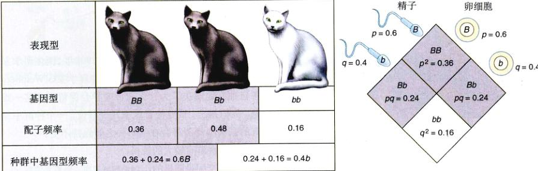
图 20.4 哈迪 - 温伯格平衡 如果没有其他外来因素的改变和影响，配子、基因型、表现型的频率在代与代之间保持不变。
Page 7 / 原始页码 409
表 20.1 进化变化的方式
| 因 素 |
描 述 |
| 突变 |
变异的最终来源，个体突变的发生是少见的，以至于突变单独作用并不能大量改变等位基因的频率。 |
| 基因流动 |
产生变化的一种有效方式，种群之间交换成员。 |
| 非随机交配 |
近亲繁殖是最常见的形式，它不改变等位基因频率，但却可以减少杂合体在种群中的比例。 |
| 遗传漂变 |
统计上的偶然事件，通常只有在很小的种群中才能发生。 |
| 选择 |
上述几种因素中唯一能产生适应性进化的因素。 |
这些计算得到的预测结果的有效性如何呢？对于很多基因的实验证明，计算结果是很准确的。正如我们将看到的，有些基因计算出的预测结果与实际值不符，其原因很大程度上是由于我们忽略了进化。
2) 为什么基因频率会发生变化
根据哈迪-温伯格定律，不管是等位基因还是基因型的频率，在一个大的自由交配种群中代与代之间传递时是保持不变的，前提是没有突变，没有基因流动，也没有自然选择发生。这些约束条件对于这一陈述的结果是否正确是极其重要的。事实上，它们是哈迪 - 温伯格定律重要性的关键，因为在自然种群中，单个等位基因的频率是经常变化的，有些基因变得更普遍，而另外一些频率降低。哈迪-温伯格定律为测量这一变化建立了一个方便实用的基线。通过了解不同因素是如何改变种群中纯合子和杂合子比例，可以识别出影响我们观察到特定事例的影响力。
很多因素可以改变基因频率，然而只有 5 种情况能使纯合子与杂合子的比例相对于哈迪-温伯格定律的预测发生显著偏差：突变、基因流动 (包括基因的迁入和迁出)、非随机交配、遗传漂变 (基因频率的随机改变，在小种群中发生的可能性大) 和选择 (表 20.1)。在这些因素中，只有选择产生适应性的进化改变，即变异是在选择过程中，结果才依赖于环境的特点，而其他因素的相对面言自独立于环境，由这些因素产生的变化与环境需要无关。
20.2.2 进化的 5 种因素
1) 突变
一个等位基因突变为另一个等位基因，显然可以改变特定等位基因在种群中的比例。对于一般基因来说，突变率通常是很低的，以至于对哈迪-温伯格比例的影响程度是很小的。细胞中单个基因突变的可能性是十万分之一至万分之一 (尽管有些基因的突变率要远高于此)。因为大部分自然环境是不能使进化停止的，种群很难足以积累由这一缓慢变化过程导致的等位基因频率的变化。尽管如此，突变是遗传变异的最终源泉，因此使进化成为可能。但我们要重点注意的是，突变发生的可能性不受自然选择的影响，也就是说突变并不会因为自然选择的偏好而更频繁地发生。
2) 基因流动
基因流动 (gene flow) 是指等位基因从一个种群移动到另一个种群的过程。这可能是一种有效的改变因素，因为这使得两个不同的种群之间可以相互交换遗传物质。有些时候基因流动是很明显的，比如一只动物从一个地方移动到另一个地方生活。如果移居到该地的动物与已经在那个地方生活的同类动物有不同特点，而且其更适于新环境而生存并成功地交配，那么接受它的种群基因组成就发生了改变。其他重要的基因流动类型一般没有这么明显。这些较小的流动包括种子、植物的花粉和海洋漂浮动物的流动 (图 20.5)。借助风力和其他动物的光顾的机会，很多被子植物的雄配子可以被携带很远的距离。
Page 8 / 原始页码 410
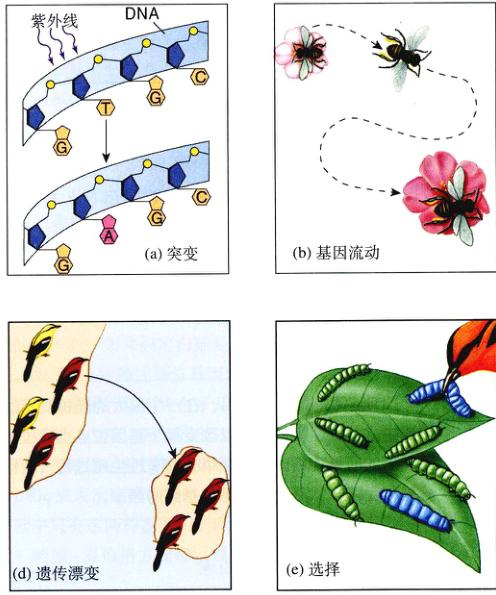
图 20.5 进化变化的 5 种因素 (a) 突变，(b) 基因流动，(c) 非随机交配，(d) 遗传漂变，(e) 选择。
借助风力、动物或其他因素，种子也可以传播到远离原产地的新种群中。此外，基因流动还可能发生在相邻种群的交配过程中。
不论基因流动是怎样发生的，它都可以改变种群中的遗传特性，并且使其不再保持哈迪-温伯格平衡。此外，即使是低水平的基因流动也可以使种群内的等位基因频率趋于均一，因此它可以防止种群的分化。在某些情况下，基因流动可以抵消自然选择，只要基因流动使得某个基因流入种群的速度大于这个基因由于选择而被淘汰的速度。
3) 非随机交配
带有某个基因型的个体可能以大于随机交配的概率更多地与另一体交配，这种现象叫做非随机交配 (nonrandom mating)。近亲繁殖 (inbreeding) (与亲属交配) 就是一种非随机交配，它使得某个基因型的频率要远高于由哈迪-温伯格定律推断出来的值。近亲繁殖并不改变等位基因出现的频率，但由于亲属之间的基因比比较相似，因此增加了纯合个体的比例。这就是为什么大多数花粉授粉的植物会有很多的纯合子个体，而与其他和自己不同的个体相交配的异型杂交 (outcrossing) 植物拥有较高的杂合子比例。
通过增加一个种群中的纯合体数量，近亲繁殖增加了隐性基因的表现机会。因为这个原因，人们不鼓励近亲结婚，甚至有时使用法律来禁止，因为这将会使孩子成为某些隐性遗传病的基因纯合子个体的可能性提高，正如第 13 章中讨论过的那样。
4) 遗传漂变
在小的种群中，基因频率可能会由于某些偶然事件而明显地改变。这些改变等位基因频率的事件一般是随机的，如果这个频率发生了漂移，那么我们把这个现象叫做遗传漂变 (genetic drift)。因此，哈迪 - 温伯格平衡下的种群必须是一个很大的种群。如果有很少量的配子参与产生下一代的个体，那么它们所携带的等位基因就不一定能代表产生它们的亲代种群。图 20.6 解释了这个现象，只有很少量的个体从包含大量个体的瓶子中倒出来，偶然的情况下，大部分倒出来的个体是蓝色的，那么将来形成的新种群中就会有较多的蓝色个体，这时蓝色个体的比例要比其亲本中蓝色个体的比例高。
Page 9 / 原始页码 411
一系列彼此隔离的小种群，即便它们所受到的选择压力基本相同，由于遗传漂变的存在也可能会产生差异。事实上，由于遗传漂变的存在，小种群中有害基因的频率可能会增加，即使选择不利于有害基因，在选择下有益基因也有可能会损失掉。十分有趣的是，人类在其进化的绝大多数过程中都是居住在小种群中的，因此遗传漂变可能是人类进化过程中非常重要的因素。
即使在大的种群中，我们也常会发现遗传漂变作用。大的种群在过去可能会比较小的，在那时遗传漂变可能会很明显地影响等位基因的出现频率。假设有一个种群只携带一对等位基因——$B$ 和 $b$，它们的出现频率是相等的 ($p=q=0.5$)。在一个很大的哈迪 - 温伯格种群中，不同基因型的频率应该是：$0.25 BB$、$0.50 Bb$、$0.25 bb$。如果只有一小部分的个体参与繁殖下一代，那么这些基因型的出现频率将会偶然产生一个较大偏差。例如，假设只有 4 个个体产生下一代，而碰巧其有两个 $Bb$ 型的杂合子和两个 $BB$ 型的纯合子——那么 $b$ 基因在下一代中的频率将是 $p=0.75$ 而 $q=0.25$。如果重复这样的实验 1000 次，每一次都从亲本种群中随机选择 4 个个体，那么这两个等位基因中的一个将会在其中某一代的时候彻底消失。这导致了一个重要结论：遗传漂变导致随机基因的丢失。引起种群规模减小的两个相关过程是建立者效应和瓶颈效应。
(1) 建立者效应：有时，一个或多个个体从原来的区域散播出去成为一个新的种群建立者。新种群离开了原来的种群有一段距离，造成了隔离。这些先驱者们并不包含它们原有种群的所有基因，这样，一些基因在这个新种群中消失了，而另一些基因的频率则发生了显著改变。在某些情况下，原来种群中很少见的基因在新种群的基因贡献中可能占据很大一部分，这种现象被称为建立者效应 (Founder Effects)。建立者效应在自然界中并不少见，很多自花授粉的植物从一粒种子开始，发展成为一个新的种群。
在远离大陆的海岛上的物种进化中，建立者效应有着特殊的重要性，比如达尔文所参观的夏威夷群岛和加拉帕戈斯群岛。在这些地方，大部分生物体都差不多是由一个或几个建立者繁衍起来的。例如，隔离的人类种群中特定遗传病的基因特征经常占绝大多数。
(2) 瓶颈效应：即使生物体不从一个地方迁移到另一个地方，偶尔它们的种群还是有可能急剧减小，这有可能是由于水灾、旱灾、传染病或者是其他的一些自然因素，也可能是由于自然环境的变迁。这少数生存下来的个体也许仅由它们原来种群的一个随机基因样本组成 (除非某些个体由于它们的基因组成而特异地生存下来)，这种变化的结果和大量遗传变异性的失去被称为瓶颈效应 (bottleneck effect)。
有些现存的物种似乎严重缺乏基因多样性，很有可能是因为过去曾经经历过瓶颈效应。举个例子，生长在北美西海岸和临近岛屿上的海象在 19 世纪几乎被猎杀一空，只剩下靠近加利福尼亚半岛附近的瓜达卢佩佩岛 (Guadalupe) 上还有一个数量不足 20 头海象的种群。由于瓶颈效应，尽管现在这个海象种群重新繁盛起来，个体数量已经上升到了 1 万以上，但是这一物种已经失去了几乎所有遗传变异。
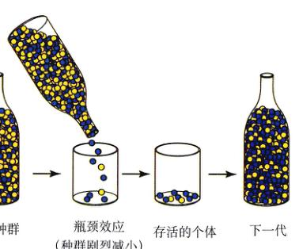
图 20.6 遗传漂变：瓶颈效应 亲本种群中包含有大约相等的黄色和蓝色个体。由于偶然的机会，少数保留下来形成下一代的个体基本上是蓝色的，瓶颈效应的发生是因为只有太少的个体形成下一代，就像在疫病流行或发生灾难性风暴之后一样。
5) 选择
正如达尔文所指出的那样，一个个体留下的后代数量多于其他个体，而且多出的程度受其表现型和行为的影响。我们将这一过程的结果称之为选择 (selection)，并把这种过程区分为人工选择 (artificial selection) 和自然选择 (natural selection)。在人工选择中，育种家选择的是符合意愿的特性。在自然选择中，环境条件决定了哪些个体可以产生更多的后代。自然选择发生并导致进化，必须达到以下 3 个条件：
- (1) 种群中的个体必须存在着变异：自然选择通过偏爱那些在性状上优于其相对状的个体而发挥作用。如果没有变异存在，那么自然选择无法进行。
- (2) 个体的变异导致后代生存数目的差异：这是自然选择的本质，因为个体的表现型和行为不同，一些个体能够更成功地繁殖后代，并把它们的基因传递给下一代。
- (3) 变异必须是可以遗传的：由于自然选择最终导致物种的进化，因此这种被选择的差异必须具有遗传基础。但是，并不是所有的变异都有遗传基础——基因完全相同的个体生活在不同的环境中，表型上也会有很大不同。这种环境的影响在自然界中是很常见的。比如，在许多种类的海龟中，产在阴暗潮湿环境中的卵孵出的幼体，比产在干燥环境的卵孵出的幼体壳更宽，更重。由于环境的影响，物种内所产生的后代变异并不是显示出物种本身基因的变异。当表现型不同的个体基因型没有差异时，它们产生的后代数量不同，并不会影响种群下一代的基因组成，因为没有进化产生。
Page 10 / 原始页码 412
记住这一点很重要，自然选择和进化是不同的——这两个概念经常被错误地混等同起来。自然选择是一个过程，而进化是随时间流逝而产生变化的历史记录。进化是一个结果而不是一个过程，自然选择 (过程) 可以导致进化 (结果)，但是自然选择只是可以产生进化的原因之一。更进一步说，自然选择将可能不导致进化，只有变异具有遗传基础的情况下，自然选择才会导致进化。
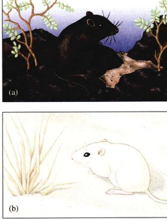
图 20.7 来自新墨西哥 Tularosa 盆地的袋鼠的体色是与其生存环境相适应的 (a) 生活在火山岩附近的岩袋鼠；(b) 生活在白沙地上的阿帕奇袋鼠。

图 20.8 适应气候状况的选择 一种鱼 (Fundulus heteroclitus) 的乳酸脱氢酶是适应低温的，其基因频率在低纬度地区降低，是因为气温较高的缘故。
(1) 逃避捕食者的选择：很多最富戏剧性的适应例子，都与降低被捕食者捕获可能性的遗传变化有关。硫磺蝶 (Colias eurytheme) 的幼虫经常全身都是单调的鲜绿色，当它们吃紫花苜蓿时，这是非常完美的保护色。而它的亮蓝色变体出现的概率却很小，因为这种颜色在其作为食物的植物上非常显眼，这使得它们很容易就会被鸟类捕食者发现。陆生蜗牛 Cepaea nemorlis 以相同的方式，通过壳的花纹和其居住住环境背景色一致伪装来避免被捕食。
一个关于模拟背景色的最富戏剧性的例子与美国南部沙漠腹地的古代熔岩流有关。在这一区域，火山爆发产生的熔岩冷却下来形成了黑色的岩石，与沙漠中的沙砾形成了强烈的对比。很多种类的动物——包括蜥蜴、啮齿类动物和许多昆虫——出现在岩石区的种群个体都是暗色的，而居住在沙漠中的群体个体色都是比较鲜亮的 (图 20.7)。捕食者是导致这一颜色差异最可能的原因。实验室研究证实，以它们为食的鸟类擅长从一群被捕食者中挑出和背景颜色不同的个体。
(2) 适应气候状况的选择：很多有关选择机制的研究都集中在编码酶的基因。因为在这种情况下研究人员可以直接测定酶等位基因频率改变的结果。研究人员经常发现酶等位基因随纬度改变而改变，某一个等位基因在北方种群中十分常见，在南方的种群中却越来越少见。一个极好的例子是对 Fundulus heteroclitus 这种分布在北美东海岸一带的鱼的研究。在这种鱼中，产生乳酸脱氢酶 (催化丙酮酸到乳酸反应的酶) 的等位基因的频率有地理差异 (图 20.8)。生物化学研究表明：不同等位基因产生的酶在不同温度下起作用，因而解释了其地理分布。比如，北方物种中基因频率高的酶在低温条件下比南方物种中基因频率高的酶催化能力强。此外，功能方面的研究表明，在低温情况下，具有北方等位基因的个体移动更迅速，生活得更好。
Page 11 / 原始页码 413
(3) 抗药性的选择：选择的一个很清楚的例子来自于昆虫抗药性的研究。一种杀虫剂的广泛使用使四百余种害虫迅速进化，产生抗药性。例如，具有抗药性的 pen 基因能减少对杀虫剂的吸收，而 kdr 和 dld-r 基因能减少靶位点的数量，从而减小杀虫剂的结合能力 (图 20.9)。其他的基因可以使昆虫的酶提高识别和解除杀虫剂毒性的能力。
其他生物中的单个基因也能产生抗性。藜 (Amaranthus hybridus) 已经对除草剂三嗪 (Triazine) 产生了抗性的 28 种农业杂草之一。三嗪可以通过与叶绿体上的一个膜蛋白结合而抑制光合作用，编码这个蛋白质的基因中某个氨基酸的改变，可以降低三嗪抑制光合作用的能力。类似地，挪威鼠一般都对杀鼠灵敏感，这种药物降低老鼠血液的凝血能力而造成致命的出血症。然而，代谢途径中一个基因改变产生的抗药性使它不再对挪威鼠有效。
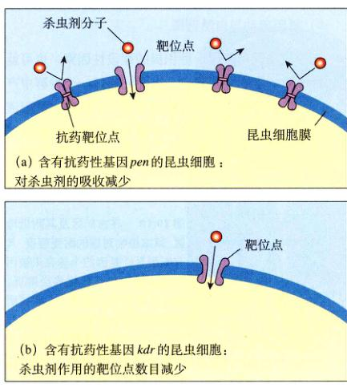
图 20.9 抗药性的选择 抗药性基因如 pen 和 kdr 使昆虫对杀虫剂有更强的抗药性，具有这种抗药性基因的昆虫因为选择而更普遍。
20.2.3 鉴定保持物种多样性的进化力量
1) 适应选择学说
20世纪70年代逐步积累的证据开始表明，在自然种群有很大的基因多态性 (也就是说，在这种群中一个基因位点上存在着许多等位基因)，这引出了一个问题：什么进化力量维持着这种多态性？正如我们在前面看到的，理论上有 5 种过程可能影响等位基因频率：突变、基因流动、非随机交配、遗传漂变和选择。因为基因流动和非随机交配不是影响大多数种群的主要因素，我们的注意力主要集中在其他的 3 个方面。
由 R.C. Lewontin (酶多态性的发现者之一) 和其他很多人一起提出的第一个假说，认为选择机制是维持这种多态性的力量所在。自然环境通常很庞杂，所以选择机制会使用一个种群中生活于不同环境的个体等位基因频率向不同的方向发生变化，从而产生多个等位基因存在的条件。这一假说被称为适应选择学说 (adaptive selection theory)。
2) 中性学说
第二种可能的学说认为基因突变和遗传漂变之间的平衡是维持这一多态性的原因。日本著名的遗传学者木村资生支持这种说法，他用很精密的数学方法证明了，只要基因突变的频率足够高 (产生基因变异)，而且种群足够小 (促进遗传漂变)，自然种群在没有选择的情况下仍然能够保持相当多基因多态性。按这种学说，选择并不起什么作用，等位基因的差异对于选择来说是“中性”的，这一学说被称为中性学说 (neutral theory)。
木村的理论虽然比较复杂，但是可以简单地表示如下：
$H = 1 / (4N_e \mu + 1)$
$H$ 表示杂合性，为种群中任意一个个体在任意一个基因位点上是杂合子的可能性。在一个没有选择的种群中，其数值由两个变量决定：种群的有效规模 ($N_e$) 和突变频率 ($\mu$)。
中性学说的特殊困难在于衡量基因多态性水平的指标 $H$，由一个很大的量 $N_e$ 和一个很小的量 $\mu$ 共同决定，而这两个量很难被精确测量。结果，这一理论可以解释差不多所有的 $H$ 值，使其证明或反驳都很困难。正如你可以想象到的那样，出现了大量有争议的结果。
Page 12 / 原始页码 414
3) 对中性学说的检验
在适应选择学说和中性学说之间作出选择并不是件简单的事，因为它们似乎能解释很多自然种群中关于基因多态性的数据。关于选择作用于酶等位基因的一些有特点的例子不具有普遍性。
(1) 种群规模：根据中性学说，假定中性等位基因的突变率 $\mu$ 是不变的，则 $H$ 所表示的多态性大小和种群规模 $N_e$ 是成一定比例的。这样，因为昆虫种群中的个体数远远高于人类种群，昆虫种群的 $H$ 值比人类种群要大得多。研究发现，果蝇 (Drosophila melanogaster) 的 DNA 序列多样性确实表现出比人高出 6 倍，与中性学说的预测一致；但果蝇和人的酶多样性水平却是差不多的。如果 DNA 序列多态性正能确地反映了中性学说的预测，那么必然有别的原因 (选择？) 增加了人类酶多样性水平。这类的例子提供了拒绝中性学说的理由。
(2) 近中性模型 (the nearly neutral model)：一种将中性学说从这类困难中解救的方法是撤销严格中性的假定，把假设修改为大多数的变异对于选择是轻微有害的而不是严格中性的。经过这样的调节，解释许多依赖于种群大小的大尺度模式是可能的。然而，实际上自然种群中大量酶多态性是轻微有害的证据很少。
随着 DNA 序列数据的增加，DNA 水平上变异的详细过程已渐渐清晰。似乎很清楚，大部分改变氨基酸序列的核苷酸替代是不利的，将被选择消除。但自然种群中许多蛋白质等位基因又怎么样呢？它们的变化是中性的还是有利的？尽管这些问题正在研究，但目前连简单的答案也还没有。编码酶的基因多样性水平可能同时依赖于基因的选择作用 (适应选择学说) 和该物种的中群群体动态 (近中性学说)，与一个基因到另一个基因的变异相关。
适应性选择明显与自然种群一些酶多样性的保持有关，而遗传漂变则似乎对在 DNA 水平上产生的多态性起重要作用。对于大部分酶水平上的多态性，研究人员无法在选择学说和近中性学说之间作出选择。
4) 进化力量之间的相互作用
当等位基因不是选择上的中性时，种群中保留的变异将由不同进化过程的相对强弱决定。例如，理论上，如果等位基因 $B$ 突变为等位基因 $b$ 的速率足够高，那么即使选择十分倾向于等位基因 $B$，等位基因 $b$ 仍能存在于种群之中。不过在自然界，突变速率很少高到能抵消自然选择的结果。
自然选择的效果也可能被遗传漂变抵消。这两个过程都起到消除种群中变异的作用，但选择是一个定向的过程，它的结果是增加了对促进生存和繁殖有利的等位基因，而遗传漂变是一个随机过程。因此在某些情况下，遗传漂变可能导致选择上有利的等位基因减少，在某些极端的例子里，遗传漂变甚至会导致种群中有益基因的消失。但是记住，遗传漂变的强弱与种群规模是负相关的；因此，除非种群非常小，否则自然选择完全可以掩盖遗传漂变所造成的影响。
5) 基因流动与自然选择
基因流动既可能是一种积极的建设性因素，也可能是一种消极的限制性因素。一方面，通过一个种群中产生的有利突变传播到同一物种的另外一个种群，基因流动能增加物种的适应性；另一方面，基因流动可能通过不断引入别的种群中较低劣的等位基因影响种群的适应性。
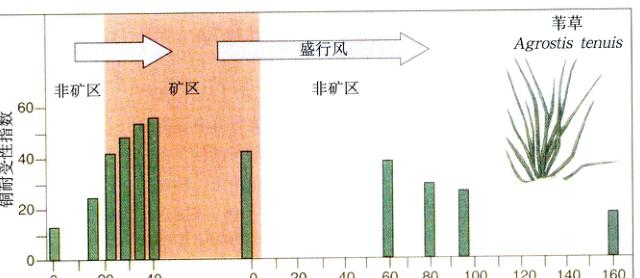
图 20.10 在古矿区及其附近地区，草本植物对铜的耐受程度 具有铜耐受性的个体在未被污染的土地上生长速度将降低。因此，我们可以预测，在矿区耐受铜的植物可达到 100%，而在非矿区为 0。但是，盛行风可以把含非耐受性基因的花粉吹到矿区，而把含耐受性基因的花粉吹到矿区周围。
Page 13 / 原始页码 415
考虑同一种物种两个生活在不同环境中的种群，这种情况下，自然选择很可能在不同的种群中选择不同的等位基因 $B$ 和 $b$。在不考虑基因流动和其他进化过程的情况下，等位基因 $B$ 在一个种群中出现的频率可能是 100%，而在另外一个是 0。然而如果基因在这两个种群之间流动，那么不利的等位基因会不断导入每个人种群中，结果，这两个等位基因在每个种群中的频率将会反映出基因流动引入劣等基因和自然选择消除它们的平衡。
关于基因流动对抗自然选择的一个经典例子发生在英国废弃的矿区。尽管采矿活动几百年前就停止了，土壤中金属离子的浓度还是比周围的地区高了很多。一般来说重金属对植物都是有害的，但是某些等位基因能使植物产生抵抗力。这种对重金属的耐受性是有代价的，有抗性基因的个体在没有被污染的土壤中生长率不高。因此，我们可以认为在矿区种群中的频率是 100%，在其他种群中是 0。但在重金属抗性研究比较透彻的植物——细弱剪股颖 (Agrostis tenuis) 中，研究人员在许多地区发现了中间水平的抗性基因 (图 20.10)。答案与这种草的生殖系统有关，它的雄配子 (即相当于花的精子) 花粉是由风来传播的。于是，携带者相应基因的花粉能被吹出很远，使得矿区和没有被污染地区之间的基因流动高到足以抵消自然选择所造成的影响。
总的来说，基因流动影响自然选择结果的程度主要在于这两中过程的相对强弱。对基因流动影响力的物种，比如鸟类和风媒花中，不利基因的频率相对较高。反之在像蜥蜴这类基因流动水平低的迁徙种类中，有利基因的频率几乎达到 100%。
20.2.4 杂种优势
前面谈到自然选择被认为是从一个种群中，通过在某一基因位点选择最有利的一个等位基因而剔除其他基因的过程。然而，如果杂合体比纯合体更有优势，那么自然选择实际上是倾向于保持种群中的变异的。原因很简单：不同于从种群中剔除不利等位基因的倾向，这种杂种优势 (heterozygote advantage) 倾向于选择同时具有两个等位基因拷贝的个体。有些进化生物学家认为杂种优势是普遍的，而且还能解释自然种群中观察到的高水平基因多态性。但另外一些学者认为这种现象是很少见的。
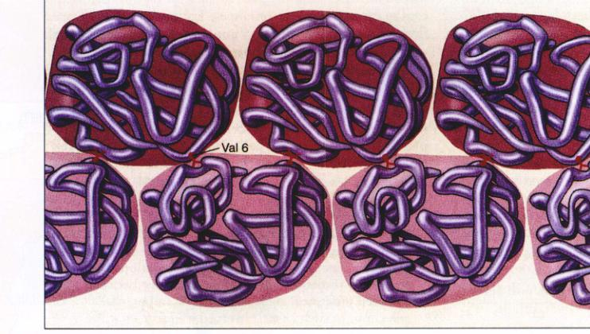
图 20.11 为什么镰刀型细胞的变异导致了血红蛋白凝聚 镰刀型细胞的变异改变了血红蛋白 β 链上的第 6 个氨基酸 (B6位)，将其从原来的谷氨酸 (极性很强) 转变为缬氨酸 (非极性)。这样的不幸结果是，B6 位的非极性缬氨酸从血红蛋白分子的一个角突出出去，恰好适合于另一个血红蛋白分子对面的非极性空穴，这使得两个血红蛋白分子结合到了一起。因为每一个血红蛋白分子都有一个 B6 位缬氨酸和一个非极性的空穴，因此一条长链就这样形成了。当极性谷氨酸 (正常的基因) 出现在 B6 位的时候，由于它不能进入那个非极性的空穴，因而不会形成一条长链。
Page 14 / 原始页码 416
1) 镰刀型红细胞贫血症
杂种优势的最好例子是镰刀型红细胞贫血症 (一种影响人类红血蛋白的遗传病)。有镰刀型红细胞贫血症的个体表现出的症状是严重贫血，红细胞异常，形状严重不规则，大量呈现出长形的镰刀状。这种病症在美国黑人中极为普遍。在第 13 章中，我们了解到这种每 1000 个美国黑人中就有 3 个患者的疾病是由一种隐性基因造成的。利用哈迪 - 温伯格方程，就可以计算出美国黑人中镰刀状红细胞基因频率为 0.003 的平方根，大约是 0.054。与此对照的是这种基因在美国白人中出现频率仅为 0.001。
镰刀型血细胞贫血症一般是致命的。直到有效的治疗方法出现之前，几乎所有染上这种病的人都死于儿童期；即使在今天，美国大约有 31% 的患者死亡时的年龄不到 15 岁。这种疾病发生的原因是血红蛋白分子中的一个 β 链的一个氨基酸发生了改变，蛋白质表面的一个谷氨酸被缬氨酸取代。谷氨酸和缬氨酸没有极性 (疏水的)，它在分子表面产生了一个黏性位点，倾向于躲避极性水环境而与另外一个黏性位点结合。已经与氧气结合的血红蛋白分子没有什问题，因为血红蛋白的原子保护了其表面的关键位置。当氧气量减少的时候，比如运动以后或者在应激状态下，氧气就不再容易与血红蛋白分子结合了，这时暴露出来的黏性位点就可能与另一个血红蛋白分子上的黏性位点相连接，这样就逐渐形成长的纤维化血红蛋白团 (图 20.11)。这样结果就会产生一个“变形”的镰刀型红细胞。
一个个体，不论是携带有关缬氨酸的等位基因 (记为等位基因 S) 的纯合子还是杂合子，都称其为具有镰刀型红细胞性状。杂合体可能会产生一些镰刀状的红细胞，但其数量只有纯合体中镰刀型血红细胞数量的 2%。这是因为，在杂合体中，有一半的分子在那个特异位点上不含缬氨酸。因此，当一个由非镰刀型基因产生的分子加入到了那条链中的时候，这时这条链上就不再有多余的黏性位点，因此也就不能再与其杂的分子相结合，这样这条链的延长就终止了。因此，在杂合体中，这些链都十分的短，不能使红细胞变为镰刀形。
2) 疟疾和杂种优势
在中非的人群中，等位基因 S 的平均频率大约为 0.12，比在美国黑人中的频率高出很多。按哈迪 - 温伯格原理，可以估计出在 5 个中非黑人中就有 1 个是有 S 等位基因的杂合子，每 100 个人中就有一个人患这种致命的疾病。镰刀型红细胞基因纯合子个体几乎不能留下后代，因为他们通常活不到生育年龄。为什么中非人群中的 S 等位基因没有被选择剔除反而仍保持如此高的水平呢？
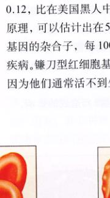
(a) 正常的红细胞 vs 镰刀型红细胞
图 20.12 镰刀型红细胞基因的频率和疟原虫导致的疟疾分布 (a) 具有镰刀型红细胞基因的纯合子个体在血中氧含量很低的时候，红细胞会变成镰刀状；(b) 在非洲大陆上，镰刀型红细胞基因的分布与疟原虫导致的疟疾分布基本上是吻合的。
Page 15 / 原始页码 417
在这一等位基因普遍存在的地区，镰刀型红细胞基因杂合子个体不易患疟疾而疟疾是导致中非人群，尤其是孩子死亡的主要病因。原因是，当病原体疟原虫 (Plasmodium falciparum) 进入红细胞时，使红细胞严重缺氧，从而导致杂合子细胞也发生镰刀化。这样的红细胞在循环过程中被脾脏过滤，疟原虫也同时被清除 (脾脏过滤的结果是导致纯合子个体贫血的原因，因为大量的血细胞被清除掉了)。
因此，尽管大多数隐性纯合子个体他们在有后代之前就死去了，但是这种镰刀型红细胞基因在人群之中仍旧保持了很高的比例 (是经过选择的)。这是因为他们与杂合体抵抗疟疾的能力相关系的，同时由于某些我们目前还不知道的原因，增加了杂合子女性的生育能力。
对于生活在疟疾流行地区的人们而言，杂合子状态含有镰刀型红细胞基因因具有适应性价值 (图 20.12)。但是对于美国黑人而言，他们的祖辈已经连续 15 代生活在这个过去很少发生而现在彻底消灭了疟疾的国度，这种环境使得他们没必要具备抵抗疟疾的能力。因此，在没有疟疾的保护而保持平衡没有适应价值。在这种没有疟疾的环境中，选择作用使 S 等位基因被逐步剔除。美国黑人中每 375 人才有一个人患镰刀型红细胞贫血症，比例大大低于中非。
20.3 选择可以作用于由多基因决定的性状
20.3.1 选择的形式
在自然界，很多也许是绝大多数的性状由一个以上的基因决定。我们在第 13 章中已经看到了，这种基因间的互相作用是很复杂的。例如，人的高度就是由很多基因共同决定的 (图 13.17)。在这里，选择作用于所有基因，对表现型贡献越大，作用越强。选择如何改变种群取决于哪种基因型受到偏爱。
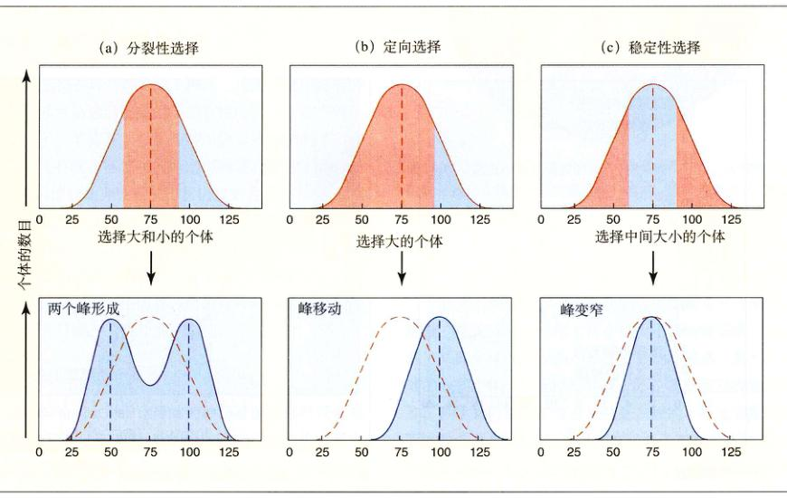
图 20.13 3 种自然选择类型 上边图表示的是在选择开始前的种群，用红色标记将被选择淘汰的个体，而用蓝色标记被选择所保留的个体。(a) 在分裂性选择中，某一性状表现型处于中间区域的个体被淘汰掉了 (红色)，而这一性状的两个极端形式则被保留了下来 (蓝色)。(b) 在定向选择中，个体向个性状有利的一个极端集中 (蓝色)。(c) 在稳定性选择中，中间区域的表现型对个体是有利的，而选择将会淘汰掉两个极端。
Page 16 / 原始页码 418
1) 分裂性选择
在某种情况下，选择的作用倾向于剔除中间类型。一个很明显的例子是非洲的红腹食籽雀 (Pyrenestes ostrinus) 的喙大小。在这种鸟的种群中，个体的喙型有大的，也有小的，但是很少有中等大小喙型的。正如它们的名字所显示的，这种鸟以种子为食，而且其可食的种子按大小分为两种：大的和小的。只有喙大的鸟才能打开大种子的硬壳，反之，喙小的鸟习惯吃小的种子。而中等大小喙型的鸟无论吃哪种种子都处于不利的地位：吃大种子打不开，吃小的不够灵活。结果，选择使中等大小喙型的鸟数量减少，将这一种群划分为两个表现型明显不同的类群。这种选择形式称为分裂性选择 (disruptive selection) (图 20.13a)。
2) 定向选择
当选择倾向于剔除种群各种表现型中处于某个极端类型时 (图 20.13b)，这种极端性状在种群中的频率下降。在图 20.14 所示的果蝇种群中，剔除向光运动的个体使得种群中几乎不再拥有能产生这种行为基因的个体。如果随机从这个新的种群中挑出一只果蝇，那它会自发向光运动的机会小于从原来种群中随机挑出的果蝇。选择使得这个种群向降低光吸引力的方向发生了改变，这种选择形式称为定向选择 (directional selection)。
3) 稳定性选择
当选择剔除种群各种表现型中处于两个极端类型时 (图 20.13c)，结果将是增加种群中具有一般中间性的个体频率。这种情况说明，选择阻止了偏离中间范围的变化。选择不但不会改变种群中普遍的表现型，而且通过减少极端个体使其更普遍。很多例子已经为我们所熟知。人类婴儿具有中等体重的生存比例是最高的 (图 20.15)，鸭鸭中等重量的蛋孵化成功率也是最高的。这种选择形式称为稳定性选择 (stabilizing selection)。
4) 适度度的组成
自然选择出现在一种表现型的个体比另外一种表现型的个体留有更多生存后代时，进化生物学家用适应度，即在下一代中生存的后代数量来量化生殖的成功性。尽管通常被归纳为“适者生存”，生存性对于选择只是适应度的一部分。即使生存能力上没有区别，选择也可能由于某些个体在吸引配偶上更加成功而发生。在很多雄性领域性动物中，体形大的雄性可能与许多雌性交配，而体形小的雄性则有机会交配。另外，产生的后代数量数同样重要，体形大的雌性蛙和鱼产卵的数量比体形小的多，因而下一代中它们的后代也多一些。
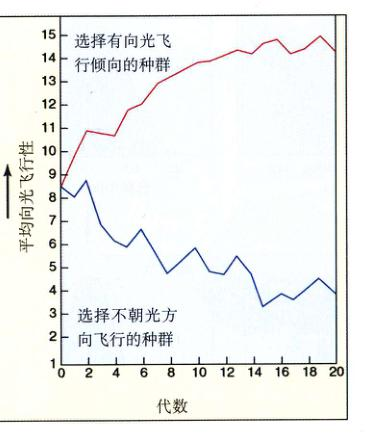
图 20.14 对果蝇趋光性的定向选择 在一代接一代的选择下，果蝇被选择性地分成了两个种群。当我们以有很强向光飞行倾向 (正趋光性) 的果蝇为父本产生下一代，它们的后代将会具有更强的正趋光性 (上边的一条曲线)。当用不朝光方向飞行的果蝇作为父本时，其后代不朝光方向飞行的倾向更强 (下边的一条曲线)。
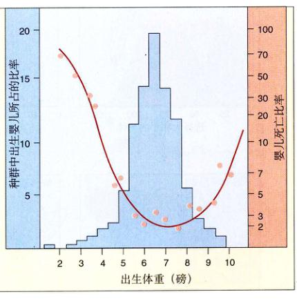
图 20.15 人类出生时体重的稳定性选择 人类婴儿的死亡概率 (红色的曲线，右侧的 y 轴) 在婴儿体重适中的情况下最小；体重过轻或过重的婴儿其死亡概率都要比 (蓝区，左侧的 y 轴) 处在 3.1 ~ 3.65 kg (7 到 8 磅) 之间最适体重的婴儿高。
Page 17 / 原始页码 419
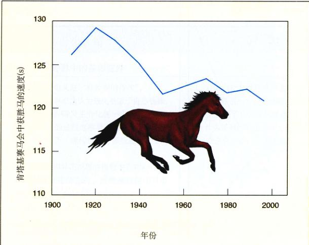
图 20.16 选择对于增加赛马奔跑速度已经不再有效 肯塔基基赛马上获胜马的奔跑速度自 1950 年开始就没有明显的改进。
20.3.2 选择作用效果的限制
尽管选择也许是理论上 5 种改变基因力量中最有力的一种，其可能达到的效果还是有限的。产生这种限制的原因在于，等位基因能以各种不同方式与别的基因相互作用。还有就是等位基因通常影响表现型的多个方面 (第 13 章讨论过的上位现象与基因多效性现象)。这些相互作用会限制表现型改变的大小，比如，选择有每窝产蛋数多的鸡最终导致它们的蛋壳变薄更易打碎。因此，我们不可能得到产肉量是现有种类两倍的巨型牛，产蛋量是现在最好蛋鸡两倍的鸡，或者是每片叶子基部都长穗的玉米，而只能在一些叶腋里结穗。
1) 进化需要遗传变异
现在 80% 以上用于比赛的纯种马基因库都可以追溯到 18 世纪末的 31 匹著名的“祖先马”身上。不管纯系比赛成绩作用如何加强，在过去的 50 年中，它们的比赛成绩都没有提高 (图 20.16)。年复一年如此激烈地选择，比以突变产生新变异更快的速度从种群中剔除原有的变异，以至于现在没有基因变异存在，进化也就可能进行下去了。
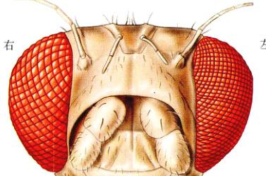
图 20.17 昆虫小眼表现型的变异 在某些个体中，左眼中可能要比右眼中只的小眼数目多。但是，这种差异没有遗传基础，是由发育过程造成的。
在某些情况下，一个性状的表现型变异并没有遗传基础。昆虫的复眼是由上百个称为小眼的视觉单位构成的。某些个体的左眼的小眼比右眼的小眼多，而另外的一些个体，情况刚好相反。不论实验室选择如何强烈，科学家们都无法筛选出总是左眼的小眼比右眼的小眼多的纯系果蝇。原因在于左眼和右眼并不存在独立的基因。更确切地说，相同的基因作用于双眼，而双眼小眼数目的不同是由形成眼的变育过程中的差异造成的 (图 20.17)。因此，尽管存在表现型的变异，但并没有遗传性变异可供选择。
Page 18 / 原始页码 420
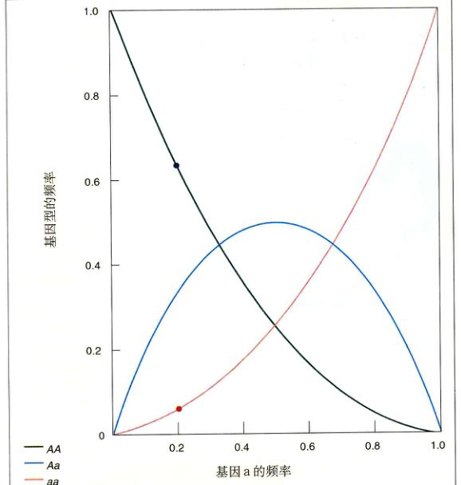
图 20.18 基因频率和基因型频率之间的关系 如果等位基因 a 的频率是 0.2，那么双隐性基因型 aa 的频率将仅为 0.04。换句话说，在 100 个个体中，只有 4 个个体的基因型是隐性基因的纯合子，而每 100 个个体中就会有 64 个是显性基因的纯合子。
2) 淘汰少数基因的选择
第二个限制选择作用效果的因素是：选择只能作用于表现型。由于这一原因，选择不能有效地作用于少量的隐性基因，原因是除非它在纯合体中一起出现，否则没有办法进行选择。例如当一个隐性基因 $a$ 的频率 (用 $q$ 表示) 为 0.2 时，只有 4% 的个体 ($q^2$) 为两个隐性基因而显示出该基因的表现型 (图 20.18)。基因频率越低，效果越显著：如果这一种群中隐性基因的频率为 $q=0.01$，那么这一种群中隐性纯合子的频率只有万分之一。
选择更多作用于表现型而不是基因型的事实意味着，除非杂合体也能同时被发现，否则改变人类或者家养动物非期望的基因是很困难的。举例如下：如果一种特定的隐性基因 $r$ ($q=0.01$) 被认为是不好的，有这种基因的纯合体不能繁殖，那么使其频率降低一半至 0.005 需要 100 代，约 2500 年。这个例子里，2500 年后，纯合体的频率仍有万分之四分之一，或者说是开始的 25%。
3) 实验室环境中的选择
一种能够评估选择作用的方法是在实验室中进行人工选择。使用除被选择的基因外其他基因一致的纯系，避免因连锁不平衡而扰乱分析。细菌种群为实验室研究进化提供了有力的工具，因为一代的时间短 (少于一个小时) 而且能在恒化器生长出大量的个体。在其开创性研究中，Dan Hartl 和他的合作者把细菌与具有不同 6-PGD 酶等位基因的细菌进行回交形成同质遗传背景，然后在只供给它们这一酶的底物——葡萄糖酸盐的条件下，比较不同菌株的成长量。结果 Hartl 发现所有等位基因的细菌生长速度是相同的！各种不同的等位基因在正常遗传背景下对选择是中性的。然而，在 Hartl 阻断了葡萄糖酸的其他代谢路径后，只有 6-PGD 介导利用这—碳源时，他获得了一个不同的结果：有些等位基因明显比另外一些优越。选择显然确实可以作用于这些基因，但只能在某些情况下发挥作用。
Page 19 / 原始页码 421
小 结
20.1 自然种群中的基因变异
- 进化的最好定义是“有改变的传代”。
- 达尔文的基本想法认为进化是源于自然选择。
- 选择是导致种群发生变化的一个非常重要因素，但其他的过程也参与并发挥作用。不论在什么情况下，遗传性变异都是进化发生的必要条件。
- 无脊椎动物和异花授粉的植物中有 8%~15% 的基因位点是杂合的。而脊椎动物中只有 5%~8%。
20.2 为什么种群中的等位基因的频率会不断地变化
- 通过研究种群中基因频率改变的机制，人们可以研究进化的机制。
- 减数分裂并不能改变种群中等位基因出现的频率。哈迪-温伯格定律指出除非选择或者其他的什么因素作用于基因，否则种群中的等位基因频率率将在一代一代的保持不变。
- 很多事件都可能引起一个种群内部的进化，包括突变、基因流动、非随机交配、遗传漂变和选择等。
- 由自然选择引起进化必须满足 3 个条件：①种群中存在变异；②这些变异与下一代存活的数目相关；③变异必须有遗传基础。
- 除非是在很小的种群中，否则自然选择的作用一般可以超过遗传漂变。
- 自然选择的作用在某些情况下可以超过基因流动，但在某些情况下却不如。
20.3 选择可以作用于由多基因决定的性状
- 分裂性选择淘汰而不利于中间类型，定向选择淘汰一系列表现型中的一个极端类型；而稳定性选择淘汰两个极端类型。
- 自然选择不是万能的；要想通过自然选择达到进化，遗传性变异是必需的。
问 题
- 自然选择和进化有什么区别？
- 什么是适应？它在达尔文的进化理论中扮演了什么样的角色？
- 什么是基因的多态性？基因的多态性在进化中有什么意义？
- 假设在一个很大的可以自由交配的种群中有一个等位基因 A，它的出现频率是 54%。那么，这个基因的杂合子在种群中所占的比例是多少？显性纯合子和隐性纯合子的比例分别又是多少？
- 为什么建立者效应可以对一个种群的基因组成产生如此重大的影响？瓶颈效应和建立者效应有什么区别？
- 近亲交配对等位基因的频率有什么作用？为什么人们不提倡近亲结婚？
- 哈迪 - 温伯格平衡
- 自然选择
· 进化的其他过程
· 进化突变
· 行为：
- 自然选择
- 等位基因频率
- 遗传漂变
媒体资源
- 科学家：从蝴蝶到全球保护
- 学生研究：棉铃象甲
- 技能测验：哈迪 - 温伯格平衡
- 选择的类型
- 技能测验：自然选择的类型